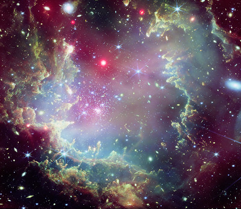
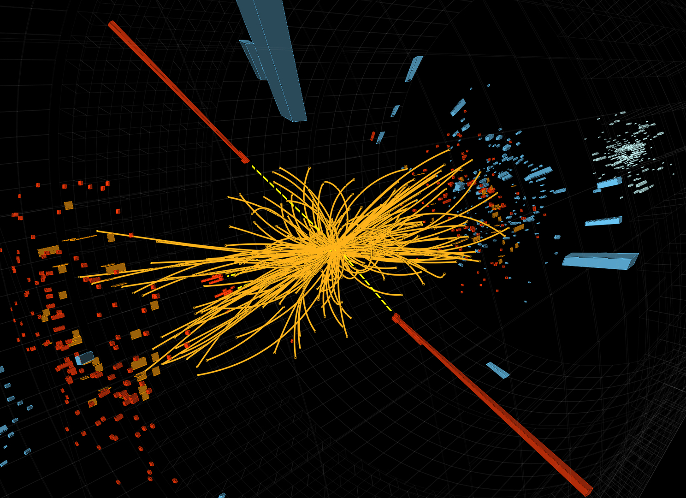

Vật lý thiên văn và vũ trụ học
Từ quan sát đa bước sóng đến các câu hỏi lớn về cấu trúc, lịch sử và tương lai của vũ trụ.
Đọc trang giới thiệu
Từ quan sát đa bước sóng đến các câu hỏi lớn về cấu trúc, lịch sử và tương lai của vũ trụ.
Đọc trang giới thiệu
Nghiên cứu Trái Đất bằng dữ liệu vệ tinh, ảnh viễn thám và các công cụ phân tích không gian.
Đọc trang giới thiệuCác nhóm nội dung về vật lý năng lượng cao và công nghệ vệ tinh sẽ tiếp tục được bổ sung khi tài liệu giới thiệu đã sẵn sàng. Navigation hiện đã được điều chỉnh để chỉ hiển thị các trang đang tồn tại, tránh dẫn người đọc tới liên kết lỗi.